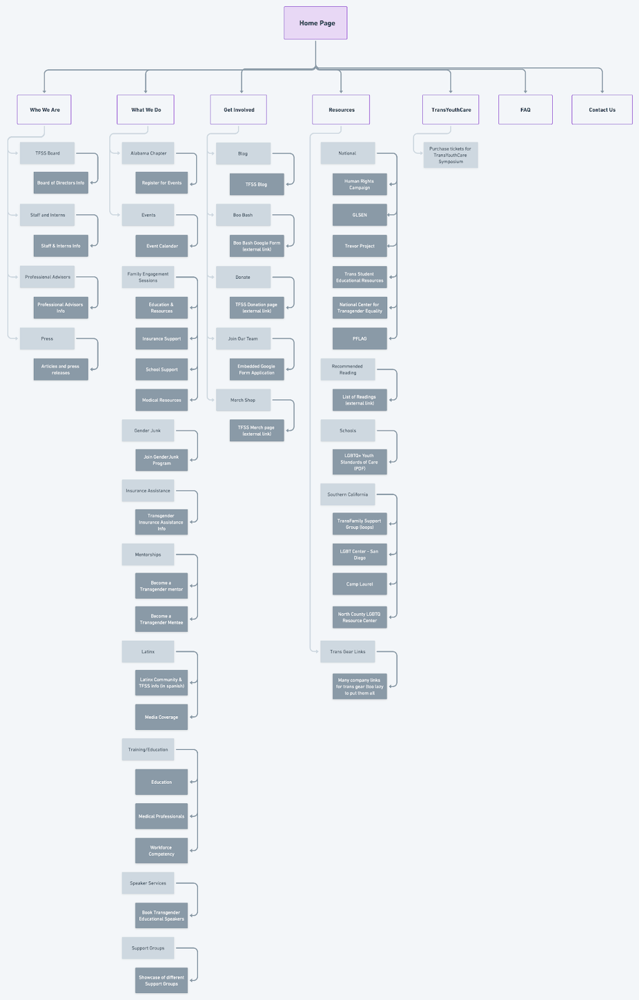

TransFamily Support Services
As part of UC San Diego's Design Co 10 week summer design and marketing initiative, Build Up, my team was paired with TransFamily Support Services. TransFamily Support Services is a San Diego based LGBT non-profit that aims to be a one stop shop for helping transgender youth navigate through their journey
RESEARCH / UX DESIGN / WEB BUILDING
Discovery Phase
We had a lot to learn about the site and industry including information architecture, possible usability heuristics that are violated, and how the site stacks up compared to other non-profits.
1.
SITE MAP
A site map allowed us to get a birds eye view of the website as well as learn the site’s organization.
2.
WEB AUDIT